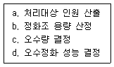
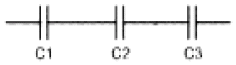
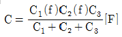
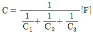
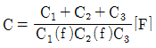
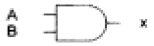
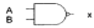
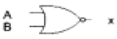
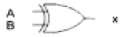

건축설비기사 (2005-05-29 기출문제)
1과목: 건축일반
1. 다음 중 조도에 관한 설명으로 옳은 것은?
- 빛을 발하는 점에서 어느 방향으로 향한 단위 입체각당의 발산광속을 말한다.
- 빛의 방향과 수직인 면의 빛의 조도는 광원의 광도에 비례하고 거리의 제곱에 반비례한다.
- 어느 면의 조도는 광도를 그 면의 겉보기 면적으로 나눈 값이다.
- 조도의 측정단위는 루멘이다.
(정답률: 60%)

2. 실내환기의 주된 목적이 아닌 것은?
- 적절한 산소공급
- 습기제거
- 기류속도 조정
- CO2 제거
(정답률: 59%)
3. 건축공간의 모듈러 코디네이션(Modular coordination)에 대한 설명 중 옳지 않은 것은?
- 설계작업이 단순하고 간편하다.
- 상이한 형태의 집단을 이루는 경향이 많다.
- 대량생산이 용이하고 생산 코스트가 내려간다.
- 현장 작업이 단순해지고 공기가 단축된다.
(정답률: 100%)
4. 사무소 건축에서 층고를 낮추는 원인으로서 가장 부적당한 것은?
- 건축비의 경제적 효과를 위함이다.
- 층수를 많이 얻기 위함이다.
- 실내 공기 조절의 효과를 높이기 위함이다.
- 외관을 좋게하기 위함이다.
(정답률: 알수없음)
5. 벽돌구조에 대한 설명 중 틀린 것은?
- 벽의 두께는 벽돌의 두께를 단위로 0.5B, 1.0B, 1.5B, 2.0B로 표시한다.
- 영식쌓기는 벽돌벽쌓기 가운데 가장 튼튼하다.
- 벽돌벽체의 강도는 벽의 두께, 높이, 길이에 의해 결정된다.
- 벽의 중간에 공간을 두고 안팎으로 쌓는 조적법을 공간벽 또는 중공벽이라 한다.
(정답률: 34%)
6. 사무소 건축에 있어서의 개방식 배치에 관한 설명으로서 옳지 않은 것은?
- 소음이 들리고 독립성이 결핍되어 있는 결점이 있다.
- 간막이 벽이 없어서 실질상 개실 시스템보다 공사비가 적게든다.
- 전면적을 유용하게 이용할 수 있으나 신축성을 기대하기 어렵다.
- 큰 사무실 형식에 많이 채용되며 임대자가 직접 간막이 등을 설치한다.
(정답률: 100%)
7. 병원건축의 형식과 구성 중 분관식에 대한 설명으로 옳은 것은?
- 각 병실마다 고르게 일조를 얻을 수 있다.
- 설비의 배관길이가 짧게 된다.
- 관리가 편하고 동선이 짧게 된다.
- 협소한 대지에서 유리하다.
(정답률: 60%)
8. 다음 중 서로 관련된 용어의 연결이 옳지 않은 것은?
- 플로어 힌지 - 창호철물
- 인서어트 - 지붕틀
- 턴버클 - 인장재 접합
- 징두리 - 벽하부
(정답률: 36%)
9. 다음 중 실내의 잔향시간과 가장 관계가 먼 것은?
- 실용적
- 실내 표면적
- 실의 평균 흡음율
- 실의 형태
(정답률: 알수없음)
10. 습윤공기의 상태에 대한 설명 중 옳은 것은?
- 공기를 가열하면 상대습도는 높아진다.
- 공기의 습구온도는 건구온도보다 높다.
- 공기를 냉각하면 절대습도는 낮아진다.
- 건구온도와 습구온도가 동일하면 상대습도는 100%가 된다.
(정답률: 25%)
11. 도서관의 출납시스템에 대한 설명 중 옳지 않은 것은?
- 폐가식은 서고와 열람실이 분리되어 있다.
- 자유개가식은 서가의 정리가 잘 안되면 혼란스럽게 된다.
- 안전개가식은 열람자가 목록 카드에 의해 책을 선택하여 관원에게 수속을 마친 후 열람하는 방식이다.
- 반개가식에서 열람자는 직접 서가에 면하여 책의 체제나 표지 정도는 볼 수 있으나 내용을 보려면 관원에게 요구하여야 한다.
(정답률: 70%)
12. 열관류율 K = 2.5[kcal/m2·h·℃]인 벽체의 양측기온이 각각 20℃ 및 0℃ 라고 할 때 이 벽체의 1m2당 1시간에 이동하는 열량[kcal/m2·h]의 값은?
- 8
- 25
- 50
- 100
(정답률: 54%)
13. 다음 중 목조벽체의 구성부재와 가장 관계가 먼 것은?
- 인방
- 가새
- 동자기둥
- 깔도리
(정답률: 84%)
14. 연속기초라고도 하며 조적조의 벽기초 또는 철근콘크리트조 연결기초에 사용되는 것은?
- 줄기초
- 온통기초
- 복합기초
- 독립기초
(정답률: 70%)
15. 철근콘크리트조에서 띠철근 압축부재 단면의 최소치수는?
- 100mm
- 150mm
- 200mm
- 300mm
(정답률: 28%)
16. 아파트 건축의 각 평면형식에 대한 설명 중 옳지 않은 것은?
- 편복도형은 공용복도에 있어서는 프라이버시가 침해되기 쉽다.
- 집중형은 채광조건이 양호하며 각 세대의 환경조건이 균일하다.
- 중복도형은 대지에 대해서 건물이용도가 높다.
- 홀형은 통행과 프라이버시가 양호하다.
(정답률: 46%)
17. 사무소의 화장실 계획에 관한 설명 중 옳지 않은 것은?
- 전실을 배치하여 복도에서의 시선을 차단하는 것이 좋다.
- 사무실에서 직접 보이지 않도록 한다.
- 동일한 층에서 3개소 이상 분산 배치하여 이용에 편리하도록 한다.
- 각층마다 공통의 위치에 설치하도록 한다.
(정답률: 알수없음)
18. 철근콘크리트구조에서 철근과 콘크리트의 부착력에 관한 기술 중 옳지 않은 것은?
- 콘크리트의 부착력은 철근의 주장에 반비례한다.
- 압축강도가 큰 콘크리트일수록 부착력은 커진다.
- 부착력은 정착길이를 크게 증가함에 따라서 비례증가 되지는 않는다.
- 철근의 표면상태와 단면모양에 따라 부착력이 좌우된다
(정답률: 34%)
19. 다음 중 리조트 호텔(Resort hotel)에 속하지 않는 것은?
- 클럽 하우스(club house)
- 터미널 호텔(terminal hotel)
- 해변 호텔(beach hotel)
- 산장 호텔(mountain hotel)
(정답률: 90%)
20. 다음 중 지붕 구조재로서 가장 부적합한 것은?
- 철골트러스
- 스페이스 프레임
- 집성목재
- 무근콘크리트
(정답률: 50%)
2과목: 위생설비
21. 다음 중 배수ㆍ통기계통의 배관시험에 관한 설명이 옳은 것은?
- 배관공사가 완료되고 보온이나 매설 또는 은폐공사를 한 이후에 만수시험을 실시한다.
- 통수시험은 실제로 사용할 때와 같은 상태에서 물을 배출하여 실시한다.
- 만수시험은 수두 30mAq 또는 압력 3kg/cm2이상으로 30분 이상 유지하여야 한다.
- 연기시험이나 박하시험은 적은 인원만으로 누설점검이 가능하며 누설이 적은 경우에도 발견이 용이하다는 장점이 있다.
(정답률: 50%)
22. 도시가스로 주로 공급되는 액화천연가스(LNG)에 대한 설명 중 옳지 않은 것은?
- 공기보다 가볍다.
- 아황산가스, 매연 등의 오염이 없다.
- 천연가스를 정제해서 얻은 메탄을 주성분으로 하는 가스를 냉각시켜 액화한 것이다.
- 발열량이 액화석유가스(LPG)보다 높다.
(정답률: 67%)
23. 국소식 급탕방법에 대한 설명 중 옳지 않은 것은?
- 배관 및 기기로부터의 열손실이 많다.
- 건물완공 후에도 급탕개소의 증설이 비교적 쉽다.
- 급탕개소마다 가열기의 설치 스페이스가 필요하다.
- 주택 등에서는 난방 겸용의 온수보일러, 순간온수기를 사용할 수 있다.
(정답률: 알수없음)
24. 오수정화조의 설계 순서를 바르게 표시한 것은?

- a - b - c - d
- a - d - c - b
- a - c - d - b
- c - d - a - b
(정답률: 알수없음)
25. 플러시 밸브식 대변기의 사용이 가능한 최저 필요수압은?
- 0.7[kg/cm2]
- 0.5[kg/cm2]
- 0.9[kg/cm2]
- 0.3[kg/cm2]
(정답률: 93%)
26. 고층건물의 배수입관(수직관)에 인접되어 접속되는 위생기구는 어떤 현상에 의하여 봉수가 파괴될 가능성이 높은가?
- 자기사이펀 현상
- 감압에 의한 흡인작용
- 역압에 의한 분출작용
- 모세관 현
(정답률: 40%)
27. 다음 중 고가수조의 설치 높이를 정하는데 필요한 요소와 가장 관계가 먼 것은?
- 수수조의 저수량
- 급수기구의 소요압력
- 최고높이에 있는 급수기구의 높이
- 배관의 손실압력
(정답률: 알수없음)
28. 위생기구의 구비조건 중 틀린 것은?
- 내식성, 내마모성이 있을 것
- 항상 청결을 유지할 수 있을 것
- 제작 및 설치가 쉬울 것
- 흡수성이 클 것
(정답률: 알수없음)
29. 펌프의 특성곡선(characteristic curve)에서 나타나지 않는 내용은?
- 전양정
- 토출유량
- 전동기동력
- 효율
(정답률: 알수없음)
30. 다음 통기 방식 중 가장 이상적인 통기 방식은?
- 각개 통기방식
- 도피 통기방식
- 습윤 통기방식
- 회로 통기방식
(정답률: 85%)
31. 지하층을 제외한 층수가 8층인 백화점에 스프링클러설비를 설치할 경우 필요한 수원의 최소 저수량은? (단, 설치 헤드수는 30개이다.)
- 24m3
- 48m3
- 72m3
- 96m3
(정답률: 70%)
32. 다음 중 고가수조 급수방식에 대한 설명으로 옳지 않은 것은?
- 단수가 자주 되는 지역에 사용한다.
- 하층부 수압이 과다할 경우는 감압밸브를 사용한다.
- 위생 및 유지, 관리 측면에서 가장 바람직한 방식이다.
- 취급이 비교적 간단하며, 대규모 설비에 적합하다.
(정답률: 알수없음)
33. 옥외소화전설비에 관한 설명 중 옳지 않은 것은?
- 노즐 선단의 방수압력은 2.5㎏/cm2이상이어야 한다.
- 호스는 구경 65mm의 것으로 하여야 한다.
- 수원의 저수량은 소화전설치개수(옥외소화전이 2개 이상이면 2개)에 3.5m3를 곱한 양 이상이 되도록 하여야 한다.
- 호스접결구는 소방대상물의 각부분으로부터 하나의 호스접결구까지의 수평거리가 40m 이하가 되도록 설치하여야 한다.
(정답률: 79%)
34. 연면적 800m2인 사무소 건물의 시간평균 예상급수량이 1000ℓ/h일 때 시간최대 예상급수량은?
- 500 - 1000 ℓ/h
- 1000 - 1500 ℓ/h
- 1500 - 2000 ℓ/h
- 2000 - 3000 ℓ/h
(정답률: 60%)
35. 내경 40[mm]인 매끈한 관을 통하여 물을 2[m/s]의 속도로 보내려고 한다. 이 때 관마찰계수가 0.03이고, 관의 길이가 200[m]인 경우, 압력강하는?
- 1.02[kg/cm2]
- 2.04[kg/cm2]
- 3.06[kg/cm2]
- 4.08[kg/cm2]
(정답률: 72%)
36. 캐비테이션 현상에 대한 대책으로 틀린 것은?
- 펌프의 설치위치를 낮게 하여 흡입양정을 적게 한다.
- 흡입배관의 마찰손실을 줄이기 위해 배관을 짧게 한다.
- 설계상의 펌프 운전범위내에서 항상 필요 NPSH가 유효 NPSH보다 크게 되도록 배관계획을 한다.
- 편흡입보다 양흡입 방식을 채택한다.
(정답률: 91%)
37. 각 급탕전에서의 온수의 공급, 순환관의 배관길이를 거의 같게 하여 마찰저항 및 순환수량을 균등하게 하는 배관 방식은?
- 강제순환방식
- 자연순환방식
- 리버스리턴방식
- 단관식
(정답률: 82%)
38. 다음의 통기관에 대한 설명 중 옳은 것은?
- 도피통기관은 배수수평지관의 최상류에서 빼내어 통기지관에 연결한다.
- 결합통기관은 2개의 통기관을 서로 연결하는 통기관이다.
- 공용통기관은 통기관과 배수관의 역할을 겸용하고 있는 관이다.
- 통기수직관의 상부는 관경의 축소 없이 단독으로 대기중에 개구하거나 신정통기관에 접속한다.
(정답률: 알수없음)
39. 급탕탱크(저탕조)내에 1000ℓ의 물을 10℃에서 80℃로 온도를 높혔을 때 체적은 몇ℓ정도가 증가되겠는가? (단, 물의 밀도는 10℃에서는 0.99973kg/ℓ, 80℃에서는 0.9718kg/ℓ 이다.)
- 29ℓ
- 40ℓ
- 55ℓ
- 97ℓ
(정답률: 알수없음)
40. 급탕 설비에 있어서 순환 펌프 순환수량을 산출하는데 필요한 값이 아닌 것은?
- 배관 길이
- 단위길이당 열손실량
- 급탕과 반탕의 온도차
- 급탕 사용수량
(정답률: 17%)
3과목: 공기조화설비
41. 다음 중 온수난방의 장점이 아닌 것은?
- 간헐운전에 적합하다.
- 부하의 변동에 대해서 온도조절이 용이하다.
- 배관의 부식이 적고, 장치의 수명이 길다.
- 안전하고 난방느낌이 부드럽다.
(정답률: 70%)
42. 다음 중 바이오 클린룸을 필요로 하는 장소가 아닌 것은?
- 식품공장
- 제약회사
- 병원
- 정밀기계공장
(정답률: 72%)
43. 공기조화방식 중 물 - 공기 방식인 것은?
- 2중 덕트변풍량 방식
- 유인유닛방식
- 팬코일 유닛방식
- 패키지 유닛방식
(정답률: 8%)
44. 유리창을 통한 취득열량을 줄이기 위한 유리창의 조건은?
- 열관류율이 적고 반사율이 클 것
- 열관류율과 차폐계수가 클 것
- 반사율이 크고 차폐계수가 클 것
- 열관류율, 흡수율, 투과율이 모두 클 것
(정답률: 46%)
45. 어느 작업장의 발생현열량이 2,900㎉/h일 때 필요 환기량(m3/hr)은? (단, 허용실내온도 36℃, 실외온도 28℃로 한다.)
- 362
- 580
- 782
- 1,250
(정답률: 알수없음)
46. 응축수의 드레인 배관이 필요 없는 곳은?
- 에어 핸드링 유니트
- 팬코일 유니트
- 재열기
- 패키지 공조기
(정답률: 62%)
47. 습공기 선도에 관한 설명으로 옳지 않은 것은?
- 습공기의 상태변화 과정을 나타낼 수 있다.
- 습공기의 비용적은 건구온도가 높을수록 작아진다.
- 건습구 온도차가 클수록 습공기의 상대습도는 낮아 진다.
- 절대습도가 커질수록 수증기 분압은 커진다.
(정답률: 19%)
48. 펌프의 정미흡입수두(NPSH)에 대한 정의로 옳은 것은?
- 펌프가 운전 중 공동현상이 일어날 때의 흡입 실양정이다.
- 펌프가 운전중 공동현상이 일어날 때 흡입 실양정과 흡입관로 손실의 합이다.
- 펌프가 운전중 공동현상이 일어날 때 펌프의 흡입 정압수두이다.
- 운전중에 있는 펌프의 흡입구에서의 전압과 그 때액체의 증기압에 해당하는 수두와의 차이다.
(정답률: 40%)
49. 다음 중 보온을 해야 할 덕트는?
- 환기덕트
- 외기도입덕트
- 배기덕트
- 2중덕트 중 온풍덕트
(정답률: 알수없음)
50. 전손실 열량 9000Kcal/h인 사무실에서 설치할 온수난방용방열기의 필요 섹션수는? (단, 방열기 섹션 1개의 방열면적은 0.20m2로 한다.)
- 70섹션
- 80섹션
- 90섹션
- 100섹션
(정답률: 25%)
51. 펌프를 수직높이 50m의 고가수조와 5m 아래의 지하수까지 50㎜ 파이프로 접속하여 매초 2m의 속도로써 양수할 때 펌프의 축동력은 몇 마력이 필요한가? (단, 파이프의 총 연장길이는 100m, 파이프 1m당의 저항은 50㎜Aq이고, 기타 저항은 무시하며, 펌프의 효율은 75%로한다.)
- 2.203 HP
- 3.45 HP
- 4.03 HP
- 4.19 HP
(정답률: 30%)
52. 보일러의 용량표시 중 난방부하, 급탕부하, 배관부하, 예열부하의 합으로 표시되는 출력은?
- 정미출력
- 정격출력
- 과부하출력
- 상용출력
(정답률: 85%)
53. 난방시에 외기량이 500kg/h 일 때 외기에 의한 냉방부하는? (단, 외기의 건구온도 5℃, 절대습도 0.002kg/kg' 이며, 실내공기는 건구온도 24℃, 절대습도 0.009kg/kg' 이다.)
- 4,371 kcal/h
- 5,235 kcal/h
- 6,378 kcal/h
- 8,543 kcal/h
(정답률: 8%)
54. 습공기 선도상에서 습공기의 건구온도와 습구온도만 알고 구할 수 없는 것은?
- 노점온도
- 비용적
- 수증기 분압
- 열수분비
(정답률: 30%)
55. 다음 중 온수난방장치의 시공법으로 틀린 것은?
- 각 방열기에는 반드시 공기빼기 밸브를 상단에 설치한다.
- 각 방열기마다 유량조절밸브를 설치할 필요가 없다.
- 배관구배는 1/250 이상으로 한다.
- 팽창관에는 밸브를 설치해서는 안된다.
(정답률: 28%)
56. 결로에 대한 설명 중 옳지 않은 것은?
- 결로에는 표면결로와 내부결로가 있다.
- 표면결로를 방지하기 위해서는 공기와의 접촉면을 노점 온도 이상으로 유지해야 한다.
- 구조체의 내부결로를 방지하기 위해서는 실외측에 방습막을 설치한다.
- 실내에서 표면결로 방지를 위해 수증기량을 억제한다.
(정답률: 알수없음)
57. 공조 수배관 회로에 있어 개방식에 비해 밀폐식의 장점은?
- 펌프 양정이 감소
- 동력비 증가
- 수처리 비용 감소
- 팽창탱크 필요
(정답률: 알수없음)
58. 유리창의 열관류율 = 3.0(Kcal/m2·h·℃), 실내외 온도차 = 30(K), 일사열취득 = 100(Kcal/m2·h), 차폐계수 = 1.0일 때 이 유리창을 통한 단위면적당 취득열량은?
- 190 Kcal/(m2·h)
- 330 Kcal/(m2·h)
- 390 Kcal/(m2·h)
- 270 Kcal/(m2·h)
(정답률: 30%)
59. 온수난방의 팽창탱크에 관한 설명 중 옳지 않은 것은?
- 물의 체적변화에 대처하기 위한 것이다.
- 안전밸브의 역할을 한다.
- 저온수난방에는 반드시 밀폐형 팽창탱크를 사용한다.
- 팽창탱크의 용량은 장치내의 전수량(全水量)에 따라 결정된다.
(정답률: 77%)
60. 다음 중 표준적인 단일덕트정풍량방식의 현열비(SHF) 선상에 있는 점이 아닌 것은?
- 실내상태점
- 토출공기 상태점
- 코일출구 상태점
- 코일의 장치노점온도
(정답률: 37%)
4과목: 소방 및 전기설비
61. 알칼리 축전지 1셀(cell)의 공칭전압은?
- 1.0[V]
- 1.2[V]
- 1.5[V]
- 2.0[V]
(정답률: 71%)
62. 어떤 회로에 전압 220[V]로 전류 6[A]가 흐르고 있다. 그 위상차가 √3/2일 때 전력[W]은?
- 659
- 1143
- 1257
- 1319
(정답률: 알수없음)
63. 다음 중 진동이 일어나는 장치의 진동을 억제시키는데 가장 효과적인 제어 동작은?
- on - off 동작
- 비례 동작
- 미분 동작
- 적분 동작
(정답률: 55%)
64. 배전계통에서의 고조파에 대한 설명 중 옳지 않은 것은?
- 배전선의 고조파는 제3고조파가 지배적이다.
- 고조파 장해 억제방법은 발생 및 피해기기의 전원 측에 필터를 설치한다.
- 진상콘덴서와 직렬리액터를 설치하면 돌입전류 억제와 고조파 장해를 억제한다.
- 정류기의 상수를 크게 하면, 배전선에 유출되는 고조파는 많아진다.
(정답률: 알수없음)
65. 1차전압 6,600[V], 2차전압 220[V]의 변압기가 있다. 2차측 부하전류가 60[A]라면 1차전류는 몇 [A]인가?
- 0.5[A]
- 2[A]
- 6[A]
- 60[A]
(정답률: 47%)
66. 회로시험기로 측정할 수 없는 전기량은?
- 교류전압
- 저항
- 교류전류
- 직류전류
(정답률: 20%)
67. 시퀀스(Sequence) 제어에 대한 설명 중 옳은 것은?
- 미리 정해진 순서에 따라 제어의 각 단계를 순차적으로 제어한다.
- 시퀀스 제어계의 신호처리 방식은 유접점 방식만 있다.
- 시퀀스 제어 회로의 주전원과 조작전원은 반드시 동일해야 한다.
- 시퀀스 제어는 일명 피드백(Feedback)제어라고도 한다.
(정답률: 73%)
68. 교류회로에서 전류가 흐르는 것을 방해하는 것이 아닌 것은?
- 임피던스
- 용량 리액턴스
- 유도 리액턴스
- 캐패시턴스
(정답률: 62%)
69. 접지저감제의 구비조건이 아닌 것은?
- 전기적으로 부도체일 것
- 지속성이 있을 것
- 전극을 부식시키지 않을 것
- 토양을 오염시키지 않을 것
(정답률: 58%)
70. 자극의 세기가 m[wb]이고, 자축의 길이가 △[m]인 자석의 자기 모멘트는?
- m△
- △/m
- m/△
- m△2
(정답률: 알수없음)
71. 자기 인덕턴스가 0.3[H]인 코일에 전류가 0.01초 동안에 3[A] 만큼 변했다면, 이 코일에 유도된 기전력은?
- 9[V]
- 10[V]
- 90[V]
- 100[V]
(정답률: 50%)
72. 쿨롱의 법칙에 관한 설명 중 잘못된 것은?
- 힘의 크기는 두 전하사이의 거리에 반비례한다.
- 힘의 크기는 두 전하량의 곱에 비례한다.
- 힘의 방향은 두 전하를 연결하는 직선방향이다.
- 힘의 크기는 두 전하사이의 매질에 따라 다르다.
(정답률: 알수없음)
73. 감전이나 누전화재를 방지하기 위하여 전선 및 케이블 점검시 측정해야할 항목은?
- 절연저항
- 전압강하
- 도체저항
- 접지저항
(정답률: 62%)
74. 알칼리 축전지의 음극 재료는?
- 수산화니켈(NiOOH)
- 카드뮴(Cd)
- 이산화연(PbO2)
- 연(Pb)
(정답률: 40%)
75. 굴곡 장소가 많아서 금속관에 의하여 공사하기 어려운 경우, 금속관 공사나 금속덕트공사 등에 병용하여 부분적으로 이용되는 배선 공사 방법은?
- 목제 몰드공사
- 애자사용 몰드공사
- 가요전선관 공사
- 플로어 덕트공사
(정답률: 알수없음)
76. 다음 그림과 같이 정전용량이 C1, C2, C3 [F] 인 콘덴서를 직렬 접속하였을 때 합성정전용량(C)은?



- C=C1+C2+C3[F]

(정답률: 43%)
77. 다음 중 NAND Gate 를 나타내는 것은?




(정답률: 50%)
78. 변압기에서 철심(core)이 하는 역할은?
- 자속의 이동통로
- 전류의 이동통로
- 전압의 이동통로
- 와류의 이동통로
(정답률: 알수없음)
79. 다음 중 배선 설비에 사용되는 전선의 규격을 결정할 때 고려되는 중요한 요소와 가장 관계가 먼 것은?
- 전압강하
- 기계적 강도
- 허용전류
- 옥내의 구조
(정답률: 알수없음)
80. 전기식 자동제어시스템의 특징이 아닌 것은?
- 구조가 간단하고 조작 동력원으로 상용전원을 직접 사용한다.
- 중앙제어시스템을 구성하여 원격통신 제어가 용이하다.
- 전기회로의 조합에 의해 계장에 융통성이 있다.
- 검출부와 조절부가 하나의 케이스에 함께 설치된다.
(정답률: 알수없음)
5과목: 건축설비관계법규
81. 다음은 에너지절약계획서를 제출하여야 하는 기준을 열거한 것이다. 부적합한 것은?
- 50세대 이상인 공동주택(기숙사를 제외한다.)
- 운동시설 중 실내수영장으로서 당해 용도에 사용되는 바닥면적의 합계가 500m2 이상인 건축물
- 의료시설 중 병원으로서 당해 용도에 사용되는 바닥면 적의 합계가 2,000m2 이상인 건축물
- 숙박시설로서 당해 용도에 사용되는 바닥면적의 합계가 3,000m2 이상인 건축물
(정답률: 20%)
82. 다음중 산업자원부장관이 에너지기술개발투자의 권고를 할 대상이 아닌 자는?
- 에너지공급자
- 에너지관련 심사자
- 에너지관련 기술용역업자
- 에너지사용기자재의 제조업자
(정답률: 알수없음)
83. 소방시설의 종류중 소화활동설비가 아닌 것은?
- 제연설비
- 자동화재탐지설비
- 연결송수관설비
- 연소방지설비
(정답률: 80%)
84. 건축법상 지하층 비상탈출구의 구조기준으로 잘못된 것은?
- 비상탈출구의 유도등과 피난통로의 비상조명등의 설치는 소방법령이 정하는 바에 의할 것
- 비상탈출구의 유효너비는 0.75m 이상으로 하고, 유효높이는 1.5m 이상으로 할 것
- 비상탈출구는 출입구로부터 3m 이상 떨어진 곳에 설치할 것
- 비상탈출구에서 피난층 또는 지상으로 통하는 복도나 직통계단까지 이르는 피난통로의 유효너비는 0.9m 이상으로 할 것
(정답률: 47%)
85. 건축물의 출입구에 설치하는 회전문은 계단이나 에스컬레이터로부터 몇 미터 이상의 거리를 두도록 되어 있는가?
- 1m
- 2m
- 3m
- 4m
(정답률: 알수없음)
86. 다음 사항 중 건축법상의 내용으로 옳지 않은 것은?
- 지하층은 건축물의 층수에 산입하지 아니한다.
- 용적률 산정시 지상층의 주차용(당해 건축물의 부속용도인 경우)으로 사용되는 면적은 연면적에서 제외한다.
- 공동주택으로서 지상층에 설치하는 탁아소의 경우에는 당해 부분의 면적을 바닥면적에 산입하지 아니한다.
- 태양열을 주된 에너지원으로 이용하는 주택의 건축면적은 건축물의 외벽 중 내측 내력벽의 중심선을 기준으로 한다.
(정답률: 40%)
87. 특정지역에 설치되는 단독정화조의 생물화학적 산소요구량의 기준(방류수수질기준)은 얼마 이하이어야 하는가?
- 10㎎/ℓ 이하
- 20㎎/ℓ 이하
- 100㎎/ℓ 이하
- 200㎎/ℓ 이하
(정답률: 42%)
88. 비상경보설비설치를 하여야 할 소방대상물의 기준이 잘못된 것은?
- 무창층 - 바닥면적이 150m2 이상인 것
- 지하층 - 바닥면적이 150m2 이상인 것
- 50인 이상의 근로자가 작업하는 옥내작업장
- 지하가중 터널 - 길이 300m 이상인 것
(정답률: 59%)
89. 다음 중 건축법상 방화구획의 설치기준에 대한 설명으로 옳지 않은 것은?
- 10층 이하의 층은 바닥면적 1천제곱미터 이내마다 구획할 것
- 3층 이상의 층과 지하층은 층마다 구획할 것
- 11층 이상의 층은 바닥면적 200제곱미터 이내마다 구획할 것
- 11층 이상의 층으로 벽 및 반자의 실내에 접하는 부분의 마감을 불연재료로 한 경우에는 바닥면적 600제곱미터 이내마다 구획할 것
(정답률: 50%)
90. 지하 2층, 지상 10층인 유스호스텔로 각층 거실 면적이공히 1,000m2인 경우의 승용승강기 대수는?
- 16인승 1대
- 8인승 3대
- 16인승 2대
- 8인승 5대
(정답률: 20%)
91. 에너지 관계대상자가 에너지 손실요인의 개선명령을 받았을 때 개선계획 수립과 그 개선결과를 산업자원부장관에게 몇 일 이내에 통보해야 하는가? (순서대로 개선계획수립(개선명령일로부터), 개선결과(개선만료일로부터))
- 15일, 7일
- 30일, 10일
- 45일, 14일
- 60일, 15일
(정답률: 알수없음)
92. 문화재보호법에 의하여 문화재로 지정된 것은 연면적 기준으로 몇 m2 이상의 건축물에 옥외소화전설비를 설치 하여야 하는가?
- 500 m2
- 1,000 m2
- 1,500 m2
- 2,000 m2
(정답률: 알수없음)
93. 특정열 사용기자재 중 산업자원부령이 정하는 검사대상기기의 설치자로서 시·도지사의 검사를 받아야 하는 자가 아닌 것은?
- 검사대상기기를 사용중지한 후 재사용하고자 하는 자
- 검사대상기기를 설치 또는 개조하여 사용하고자 하는 자
- 검사대상기기를 연구개발하고자 하는 자
- 검사대상기기의 설치장소를 변경하여 사용하고자 하는 자
(정답률: 36%)
94. 다음 중 특별피난계단의 구조의 설명 중 옳지 않은 것은?
- 계단실 및 부속실의 실내에 접하는 부분의 마감은 불연재료 또는 준불연재료로 할 것
- 계단실에는 예비전원에 의한 조명설비를 할 것
- 계단실의 노대 또는 부속실에 접하는 창문등은 망이 들어 있는 유리의 붙박이창으로서 그 면적을 각각 1제곱미터 이하로 할 것
- 계단실에는 노대 또는 부속실에 접하는 부분외에는 건축물의 내부와 접하는 창문등을 설치하지 아니할 것
(정답률: 70%)
95. 건축법상 철근콘크리트조 기둥이 내화구조로 인정받기 위한 최소지름은?
- 20㎝
- 25㎝
- 30㎝
- 35㎝
(정답률: 48%)
96. 다음 중 민간사업주관자가 에너지사용계획을 수립하여 산업자원부장관에게 제출하여야 하는 시설의 기준으로 옳은 것은?
- 연간 5천티·오·이 이상의 연료 및 열을 사용하는시설
- 연간 2천만킬로와트시 이상의 전력을 사용하는 시설
- 연간 1만티·오·이 이상의 연료 및 열을 사용하는시설
- 연간 3천만킬로와트시 이상의 전력을 사용하는 시설
(정답률: 24%)
97. 공연장의 개별 관람석의 바깥쪽에는 그 양쪽 및 뒤쪽에 각각 복도를 설치하여야 하는 바닥면적의 기준은?
- 개별 관람석 바닥면적이 100m2 이상
- 개별 관람석 바닥면적이 200m2 이상
- 개별 관람석 바닥면적이 300m2 이상
- 개별 관람석 바닥면적이 500m2 이상
(정답률: 39%)
98. 숙박시설은 연면적 기준으로 얼마 이상인 경우 자동화재탐지설비를 설치하여야 하는가?
- 600m2 이상인 것
- 1,000m2 이상인 것
- 2,000m2 이상인 것
- 3,000m2 이상인 것
(정답률: 90%)
99. 다음 소방시설 중 피난설비가 아닌 것은?
- 통로유도등
- 유도표지
- 인명구조용 공기호흡기
- 비상콘센트
(정답률: 알수없음)
100. 건축법령상 배연설비의 구조기준에서 건축물에 방화구획이 설치된 경우 그 구획마다 1개소 이상의 배연창을 설치하되 반자높이가 바닥으로부터 3미터 이상인 경우에는 배연창의 하변이 바닥으로부터 얼마이상의 위치에 놓이도록 설치하여야 하는가?
- 0.9m 이상
- 1.2m 이상
- 1.8m 이상
- 2.1m 이상
(정답률: 알수없음)